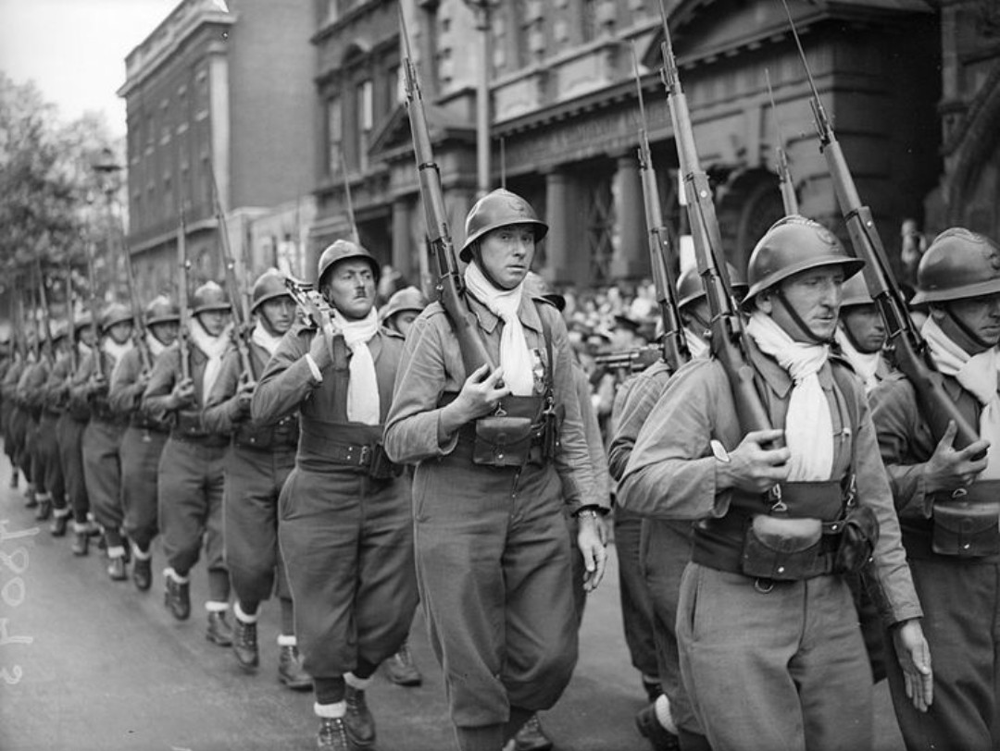

10 mai 1940 – 25 juin 1940
France, Belgique, Pays-Bas
Alliés : France, Royaume-Uni, Belgique, Pays-Bas
Axe : Allemagne (Wehrmacht)
La bataille de France est l’offensive éclair menée par l’Allemagne nazie au printemps 1940. Malgré une armée française nombreuse, la stratégie allemande du « coup de faucille » contourne la ligne Maginot en passant par les Ardennes, provoquant l’effondrement rapide du front allié.
Le 10 mai 1940, les forces allemandes attaquent simultanément les Pays-Bas, la Belgique et le Luxembourg. Pendant que les Alliés se portent au secours de la Belgique, les divisions blindées allemandes traversent les Ardennes, jugées impraticables. La percée de Sedan ouvre la route vers la mer : les armées alliées sont encerclées, menant à l’évacuation de Dunkerque. Paris est déclarée ville ouverte le 13 juin. Le 25 juin, l’armistice entre en vigueur.
Victoire allemande. La France est occupée et divisée entre zone libre et zone occupée.
La défaite de 1940 bouleverse l’équilibre européen. Le Royaume-Uni se retrouve seul face à l’Allemagne. La France entre dans une période sombre : occupation, collaboration, résistance.